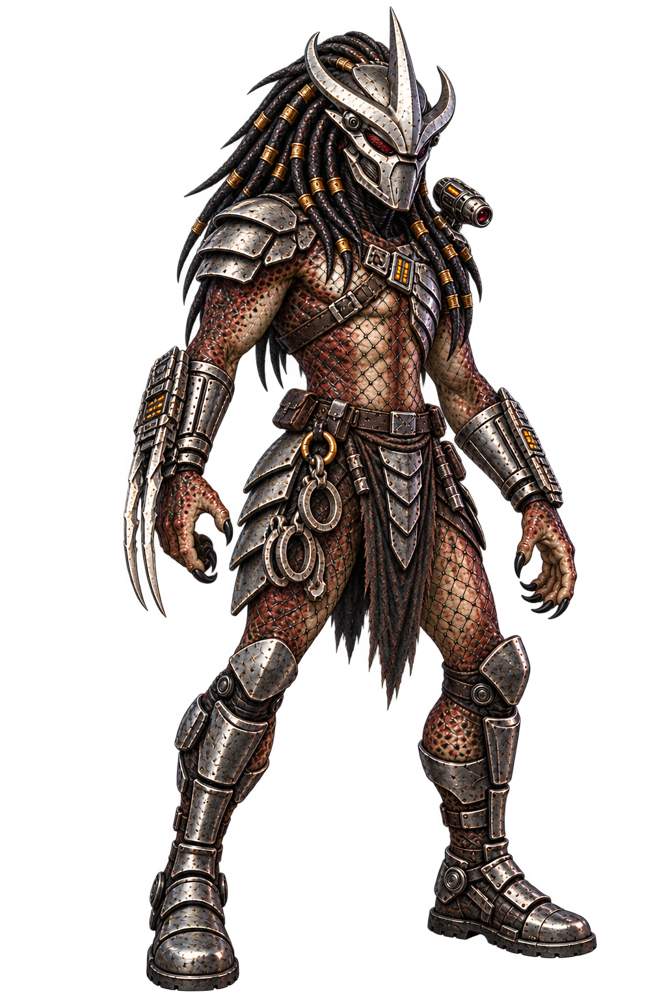

V6.12Variante 06


Lignée des Super Predators
Porte-liens
Figure entière de Super Predator au corps athlétique long, biomask Enforcer porté à haute pointe centrale et pointes latérales métalliques, peau brun rouge mouchetée et filet visible. Deux liens de capture fermés pendent nettement à la ceinture, épaulières dissymétriques, bras dégagés des accessoires, deux jambes plantigrades et bottes intégralement dans le cadre. Les accessoires et la silhouette sont cohérents et raccordés.
Apparence et preuve du fichier
- Identifiant
- super-predators--enforcers-comics-06
- Statut actuel
- Conservée hors main · PR nº 9
- Format natif
- 1 024 × 1 536 · PNG RGBA · 2 356 142 octets
- Peau
- brun rouge sombre
- Armure
- argent patiné
- Limites constatées
- Le biomask cache les mandibules ; fidélité anatomique 1:1 non certifiée. Marges vides présentes mais cible de 8 % non uniforme.
- SHA-256
- e89225ccce7dc038c87403491b89b3f70221994438ceddceaff2342254beb63a